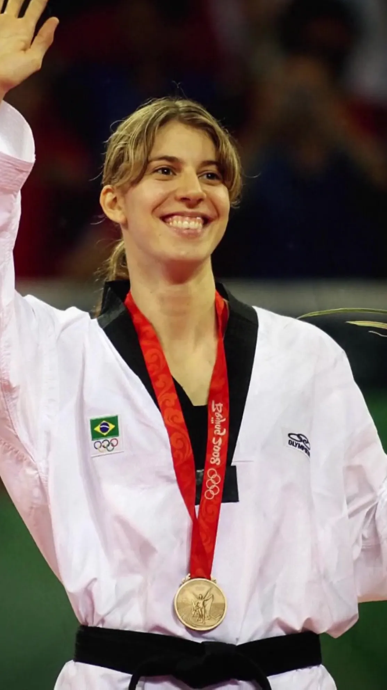
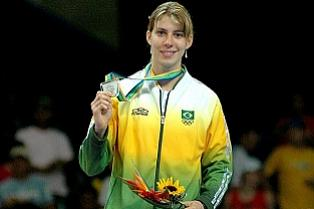

Natália Falavigna iniciou sua trajetória no esporte ainda jovem no Paraná, onde encontrou na disciplina do taekwondo a base para o seu desenvolvimento. O apoio das federações locais e o treinamento intensivo nas academias do estado foram fundamentais para lapidar seu talento, permitindo que ela se destacasse rapidamente nas competições regionais e nacionais antes de ganhar projeção internacional.
O ápice da carreira de Natália ocorreu nos Jogos Olímpicos de Pequim, em 2008, quando conquistou a medalha de bronze. Esse feito colocou seu nome na história do esporte nacional ao se tornar a primeira medalha olímpica do taekwondo brasileiro. A conquista não apenas consagrou anos de dedicação, mas também elevou o patamar da modalidade no país, servindo de inspiração para novas gerações de atletas.

Após encerrar sua jornada vitoriosa nos tatames, Natália permaneceu ligada ao taekwondo assumindo papéis estratégicos na gestão do esporte. Atuando na liderança e na organização da seleção brasileira, ela passou a aplicar sua experiência para estruturar o desenvolvimento de novos talentos e fortalecer a presença do Brasil nas principais competições mundiais.

Antes de se consagrar nos tatames, Natália praticava basquete na infância e juventude. Ela descobriu o taekwondo de forma despretensiosa aos 16 anos, buscando apenas uma Após encerrar sua jornada vitoriosa nos tatames, Natália permaneceu ligada ao taekwondo assumindo papéis estratégicos na gestão do esporte. Atuando na liderança e na organização da seleção brasileira, ela passou a aplicar sua experiência para estruturar o desenvolvimento de novos talentos e fortalecer a presença do Brasil nas principais competições mundiais. Após encerrar sua jornada vitoriosa nos tatames, Natália permaneceu ligada ao taekwondo assumindo papéis estratégicos na gestão do esporte. Atuando na liderança e na organização da seleção brasileira, ela passou a aplicar sua experiência para estruturar o desenvolvimento de novos talentos e fortalecer a presença do Brasil nas principais competições mundiais. Após encerrar sua jornada vitoriosa nos tatames, Natália permaneceu ligada ao taekwondo assumindo papéis estratégicos na gestão do esporte. Atuando na liderança e na organização da seleção brasileira, ela passou a aplicar sua experiência para estruturar o desenvolvimento de novos talentos e fortalecer a presença do Brasil nas principais competições mundiais. atividade física complementar. O talento natural e a rápida adaptação aos golpes fizeram com que ela migrasse definitivamente para as artes marciais, tornando-se campeã mundial júnior poucos anos após o seu primeiro treino.
Além da inédita medalha olímpica em 2008, Natália carrega um feito raro no esporte mundial: ela conquistou medalhas em campeonatos mundiais de taekwondo em três categorias de peso diferentes ao longo da carreira. Essa flexibilidade competitiva demonstrou sua capacidade técnica superior e excelente preparação física para se adaptar contra adversárias de diferentes envergaduras e estilos de luta.